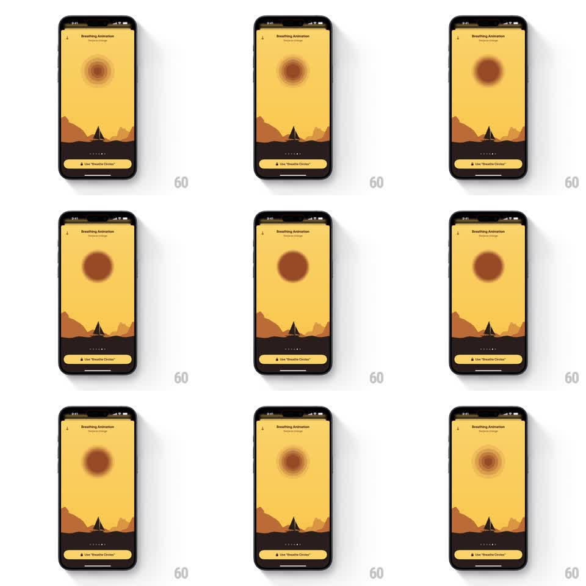

Media
Frame-by-frame

Rebuild this animation 1:1: Unwind's breathing guide - over a desert-dune scene, concentric circles expand and contract in a slow rhythm, rippling like rings to pace the user's breathing.

Rebuild this animation 1:1: Unwind's breathing guide - over a desert-dune scene, concentric circles expand and contract in a slow rhythm, rippling like rings to pace the user's breathing. ## Integration Integration: stack-agnostic spec - springs given as stiffness/damping, timed motions as duration + curve; map every value to your framework and animation library of choice. ## Scene Unwind's "Breathing Animation" screen: a warm yellow sky over dark desert dunes with a small tent silhouette, page dots and a "Use 'Breathe Circles'" button at the bottom, and a back chevron top-left. Floating in the sky, a set of concentric circles in deep orange - they bloom outward from a tight core to a wide ring and fall back, looping. ## Motion spec Pattern: concentric breathing loop, ~8s per breath. - Inhale (~4s): the circles expand from center (scale 0.6 to 1.4, ease-in-out), outer rings lagging inner ones by ~120ms each, creating a ripple; opacity deepens as they grow. - A brief hold at full expansion (~1s), rings softly pulsing (plus/minus 2 percent scale). - Exhale (~4s): the rings contract back (ease-in-out), inner rings leading, fading lighter as they shrink into the core. - The desert scene, page dots, and button stay perfectly still - only the circles breathe. ## Calibration - The lag between rings is the ripple - without it the circles read as one disc scaling. - Expansion is smooth sinusoidal motion, no springs, no bounce. ## Reduced motion A single circle slowly fades between two sizes with "breathe in / out" text. ## Don't miss - The circles sit in the sky like a sun - centered above the dune horizon. - The loop never stops or resets visibly; exhale flows into inhale.